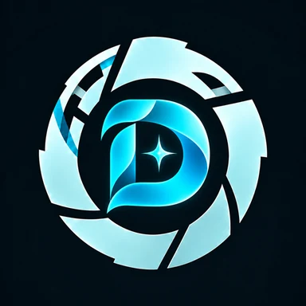

EXODE · Sommeil
Dors
Le sommeil, nuit après nuit.
Bientôt disponible
En préparationElle s'installera ici, sur Android
En attendant, Respire permet déjà de suivre ses nuits, gratuitement.
- AndroidPlateforme
- Health Connectpour lire la montre
- 6 semainesde programme
- À venirPrix annoncé à la sortie
Aperçu
À propos de Dors
L'application sommeil d'EXODE, la suite de Respire : votre montre, des voix guidées, un programme de six semaines. Avec douceur, sans promesse miracle.
- Le bilan de vos nuitsGarmin, Samsung, Pixel Watch, Fitbit, Withings… par Health Connect : chaque phase expliquée et chaque réveil à la seconde.
- Des voix guidéesCinq séances pour le soir et la nuit, sur une musique zen, sans connexion et écran verrouillé.
- Un programme de 6 semainesInspiré des principes de la TCC-I : une leçon, un geste et une voix chaque semaine.
- Plantes du sommeilTreize fiches d'après les sources officielles : à quoi elles servent, quand les éviter.
Confidentialité
-
Vos nuits restent sur votre téléphoneLa montre est lue sur place, rien n'est envoyé.
-
Pas de compte, pas de traceurNi publicité, ni mesure d'audience.
Santé
Dors est un outil de bien-être pour adultes, pas un dispositif médical. Si vos difficultés de sommeil durent ou vous inquiètent, parlez-en à votre médecin.